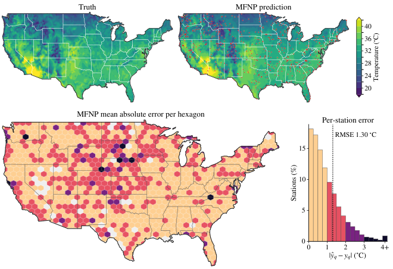

选取理由
近期回看，非当日新增。11 月 19 日 v1，本轮首次收录。它把每个查询放回扫描位置读取上下文，并通过只读查询保持查询集合一致性，比把所有观测压成一个向量更值得对照。与 P1 的机制匹配度中高、可迁移性中、工程可行性中，全文和资源表证据较强，但尚无时间任务验证，不能把空间距离直接写成真实 Δt。
研究背景
由原简报的核心问题、选取理由和相关性整理，不替代原文背景综述。
环境传感网络常在不规则地点记录温度等变量，需要根据部分站点的观测恢复整幅场，并估计不同地点之间的联合不确定性。高斯过程每个新场都要解线性系统，注意力神经过程也随观测和查询总数增长而变贵。简单状态空间替代又容易让所有查询依赖同一个压缩状态。本文研究在点数增加时，如何同时保留局部上下文、联合采样和较低的推理成本。
核心问题
任务是同一天空间场的条件插补，既要让查询读取附近证据，又要避免新增查询改变已有查询的值。作者要求查询集合边缘一致，并比较概率校准与精度。它没有直接研究因果未来预测、多变量异步通道或高低频统一，空间点数量也不等于历史时间长度。
对当前主题的关键意义在于：原始应用领域：环境温度空间插补。可迁移模块或训练目标：只读查询、坐标距离门控与一步蒸馏的联合概率头。对应在研问题：P1 中稀疏诊断观测到稠密查询的条件建模，需改为历史可见的时间扫描。预期计算和显存影响：固定宽度下扫描线性，排序和蒸馏训练额外有成本，尚无当前时序端到端或峰值显存证据。主要失效条件或数据风险：双向扫描泄漏、共享潜变量限制联合自由度、固定站网泛化和瞬态过平滑。最小验证实验：固定一个已按炮切分的诊断数据集，只用历史观测，对比单向 Mamba 单状态、逐查询读出和插值后骨干，统一采样次数，记录短前兆召回、NLL、延迟和 allocated 峰值。
方法与关键创新

原论文图示，方法结构或实验结果，具体配置及资源测量边界见正文与原图注。
上下文和查询使用不同投影，坐标经固定随机傅里叶特征编码。二维 Hilbert 顺序、轴交换及反向形成四向共享参数的 Mamba-2 扫描，上下文写状态，查询以零输入和零步长只读状态，去掉短卷积。门控使用扫描中前一上下文的距离。共享随机函数生成相关初值，先条件流匹配，再 reflow 蒸馏到一步 Euler。NOAA 另加 CRPS 微调，基线没有同阶段。查询位置逐点读出和多向融合是结构核心，时空因果改造属于本简报建议。
实验结果
表 2 美国站网 K=5,580，MFNP 的 RMSE 1.598°C、CRPS 0.774°C，优于 FNP 的 1.695 与 0.864，95%区间覆盖率 0.955。单 L40S 每场生成 128 次联合样本耗时 1,126ms，FNP 为 883,100ms。表 8 的百万点是另一口径，batch=1、一个后验样本、1,048,576 点约 913.86ms，含排序，不是 128 样本耗时。预测质量仅验证至 5,580 点。二维合成任务 MSE 0.0167 劣于 TNPA 0.0126，不能称全面最优。
局限性
NOAA 按日期划分但站点固定，只验证见过站点的跨日期插补，不是跨地点迁移。每配置一个训练模型，10 个种子是评价种子。NOAA 最多 140k 更新而基线 100k，速度收益混合了骨干和蒸馏，简单独立预测器在小规模更快。百万点未验证质量，资源表不能当完整在线系统或峰值显存保证。双向空间扫描直接用于时间预测会有未来泄漏风险。论文自载 NeurIPS 2026 页脚，但本轮未独立核验正式接收来源，只列普通回看。官方仓库链接已核可达，未审计实现或复现。
总结
值得优先看只读查询和局部状态读出，而不是只看百万点标题。它为稀疏条件概率建模提供结构对照，尚未解决 P1 的完整时序目标。
研究相关性与启发
原始应用领域：环境温度空间插补。可迁移模块或训练目标：只读查询、坐标距离门控与一步蒸馏的联合概率头。对应在研问题：P1 中稀疏诊断观测到稠密查询的条件建模，需改为历史可见的时间扫描。预期计算和显存影响：固定宽度下扫描线性，排序和蒸馏训练额外有成本，尚无当前时序端到端或峰值显存证据。主要失效条件或数据风险：双向扫描泄漏、共享潜变量限制联合自由度、固定站网泛化和瞬态过平滑。最小验证实验：固定一个已按炮切分的诊断数据集，只用历史观测，对比单向 Mamba 单状态、逐查询读出和插值后骨干，统一采样次数，记录短前兆召回、NLL、延迟和 allocated 峰值。